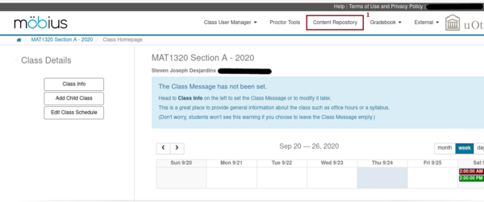

Previewing Questions
Introduction
We explain how to preview a question from the bank of questions for the calculus courses. The same procedure applies to previewing any question in Möbius.
Procedure
-
Log in to your course on Möbius.
 -
After accessing the home page for your course, select the item Content Repository (item 1 in the figure above) from the top menu to get the following display.
-
Select the item Questions (item 2 in the figure above), to get the list of available questions and directories containing questions.
-
In the present case, you get 14 directories. In this example, all directories are marked by the green symbol for shared directories because they are all inherited from the parent course of the present course. If you want to look at question under the integrals directory, it suffices to click on the title of the directory (item 3 in the figure above) to get the following display.
-
You get another list of directories. If you want to look at the questions about the method of substitution, you only have to click on the name Substitution (item 4 in the figure above) which is for the name of the directory contains these questions. You finally get the following display with the list of available questions on the desired subject.
-
This time, there is no directories but only questions. As for the directories, all questions are marked by the green symbol for shared questions because they are all inherited from the parent course of the present course. If you want to preview the question 5.6.30 - definite ( u = sin(nx) ) (T), you click on its title to get the following display.
-
You get information about the selected question. The section Details (item 6 in the figure above) should be ignored. The authors of the questions did not bother entering the information. The interesting section is Statistics (item 7 in the figure above) where you can find how many students have answered this question, how many got it completely right, partial right or totally wrong. This is useful the judge the level of difficulty of the question. The easiest way to preview the question is to click on the (partial) display of the question. You will see a big Q appear when your moose hovers over the (partial) display of the question. So, if you click on the (partial) display of the question, you get the a popup window with the question in it.

-
After you have entered your answers, you can click on How did I do? (item 9 in the figure above), to ask Möbius to tell you if your answers are right. Each right answer is surrounded by a green rectangle and each wrong answer by a red rectangle.
Answers to multiple choice questions that require to select many items, matching questions, Maple Graded questions with partial marks, ... may also be surrounded by a yellow rectangle if the answer in partially right. You may return to edit your answers by clicking in any of the boxes to enter the answers.
If you want to look at the detailed solution of the question, you only have to click on Grade (item 8 in the previous two figures) to obtain the detailed solution. The question is also completely graded.
You can click on back (item 12 in the previous two figures) to go back to the popup window with the question.
At any time, you click on Close (item 11 in the last four figures) to quit the display and go back to the list of questions in the content repository.
There is also the possibility to click on Refresh (item 10 in the two initial figures above of the popup window with the question) to request a new version of the question.